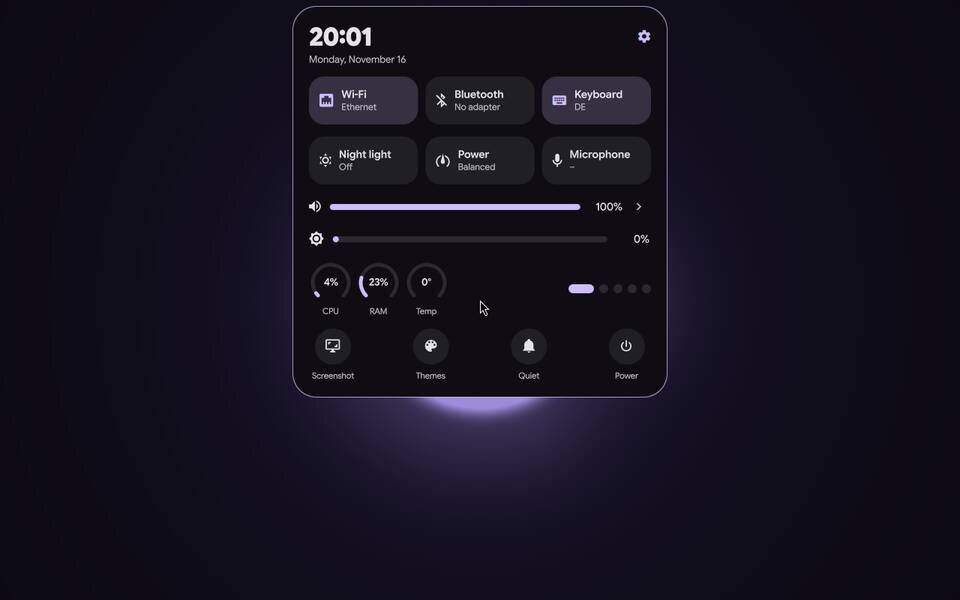

A fast, beautiful Linux system with its own desktop. Built on CachyOS, designed around the Living Island.

Features
Canvas is the desktop of CanOS. It was built from scratch to feel fast, calm and alive.
The heart of Canvas. Music, notifications, volume, battery and your workspaces – all in one island at the top that grows when something happens and gets out of the way when nothing does.
Wi-Fi, Bluetooth, audio devices, night light and power profiles. One click from anywhere.
Switch the whole look with Super + T. Colors flow through the entire system, even the boot menu.
Grouped by app, with actions, inline replies and images. Do not disturb when you need focus.
Displays, touchpad, keyboard, default apps, account, time and updates – without touching a config file.
Optimized CachyOS kernel and packages, Hyprland underneath and Btrfs for your files.
CanOS updates the system and your Flatpak apps from the settings.
No tracking, no account required. Lock screen, password dialogs and Secure Boot support.
Install
Get the ISO and check it with the SHA256 checksum.
Write it with Ventoy, Fedora Media Writer or dd. At least 8 GB.
Turn off Secure Boot in your BIOS, start from the stick, try CanOS live and install it with a few clicks. Works offline.
FAQ
Yes. CanOS is free and open source under the GPL-3.0. No account, no ads, no tracking.
Secure Boot only starts systems with a signature from Microsoft. The CanOS ISO is not signed yet, so the computer refuses to start it. Turn it off in your BIOS/UEFI settings before booting the stick – you can turn it back on later with your own keys (sbctl).
Yes. The installer can shrink an existing partition and install CanOS next to Windows. You choose the system every time you start the computer. Back up your files first.
Yes. CanOS keeps the NVIDIA drivers when it finds an NVIDIA card, including laptops with two graphics chips.
On CachyOS and Arch Linux. You get their fast kernel and up-to-date packages, plus Canvas – the desktop made for CanOS.
Open Settings › About and click Update. Or run canos-update in the terminal.
Open a terminal and run curl -sL https://tschaki11.github.io/canos/repo.sh | sudo bash once. After that, Canvas and the CanOS tools update together with the rest of the system.
Please report it on GitHub – a short description and, if you can, a photo or screenshot help a lot.
CanOS is free and open source. Download it, try it live and make it yours.